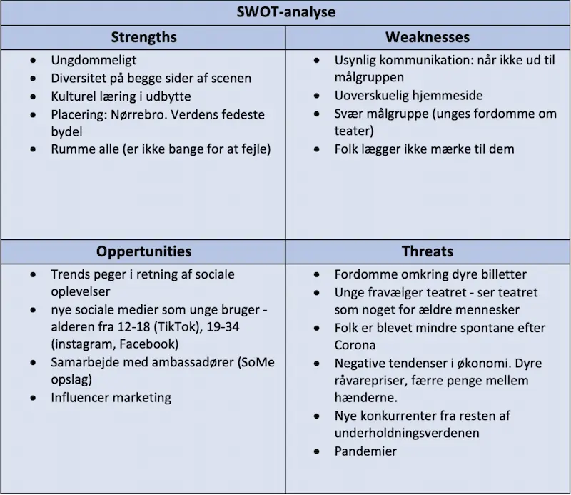
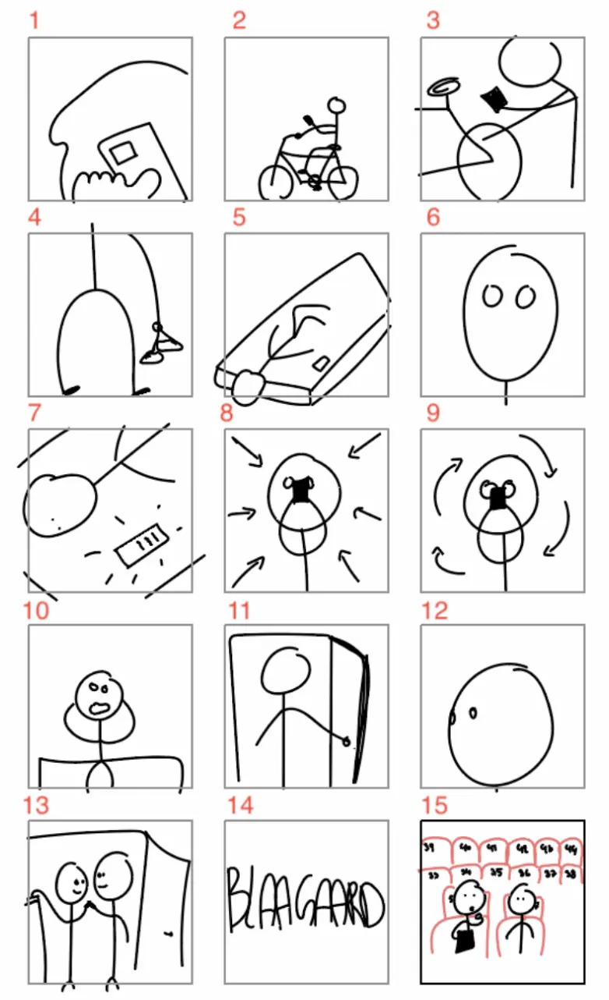

Proces
Define
Hvorfor går folk ikke i teatret mere?
Research
Indsamling af viden omkring målgruppen og markedet. Kvantitativ research i form af desk research og spørgeskemaundersøgelse. Kvalitativ research i form af ekspertinterview, semi-struktureret interview med målgruppen, BERT-test og 5 sekunders test.

Ideate
Idéer til koncept samt research. TOWS, branding, OMD og idégenering til videokampagne.
Prototype
Udarbejdelse af prototype til select fasen. Prototype i XD med mock-up, wireframes, layoutdigram, Previz og storyboard.

Select
Fastsættelse af konceptet vi vil arbejde på. Indholdsplan til SoMe, fastsættelse af KPI'er og influencer samarbejder.
Implement
Kampagnevideo, landingpage + portfolio site, SoMe opslag
#Bytdinbillet